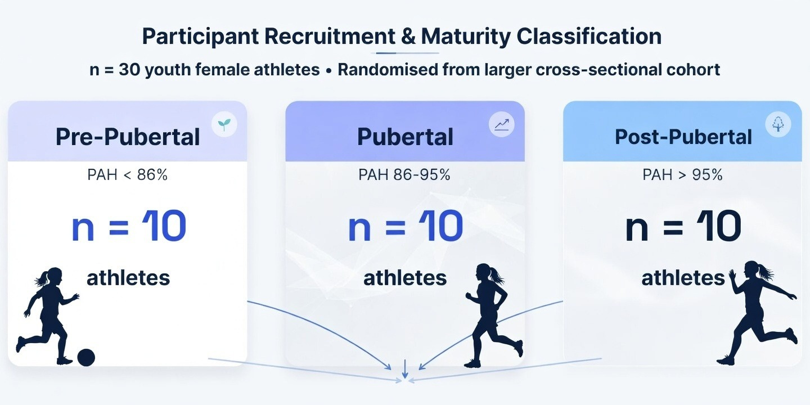
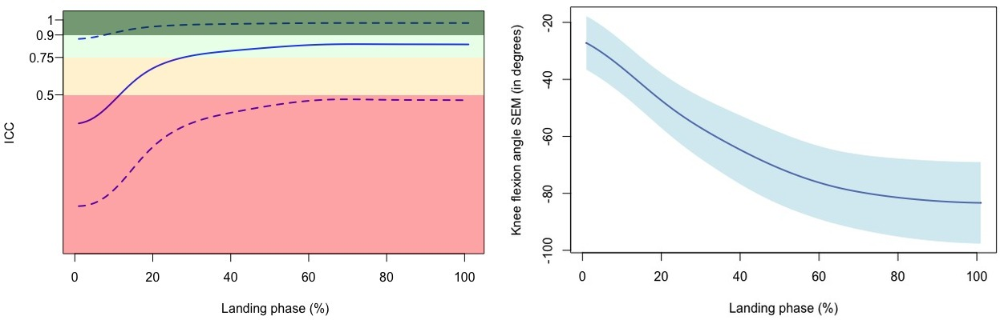

Overview
Context
Markerless motion capture systems offer a faster, non-invasive alternative to traditional marker-based systems for biomechanical analysis. Before they can be adopted in clinical and field settings for ACL injury risk screening, their measurement reliability must be rigorously established, particularly in youth female athletes where ongoing maturation introduces unique variability into movement patterns.
What We Did
We recruited 30 youth female athletes across three maturity groups and captured three trials each of four jump-landing tasks using an eight-camera Theia3D system synchronised with Kistler force plates. We examined within-session relative reliability (ICC) and absolute reliability (SEM) at discrete time points and across the full landing phase time-series, with a subgroup analysis by maturity.
Does a markerless motion capture system (Theia3D) produce reliable measurements of lower-limb kinematics and kinetics during jump-landing tasks in youth female athletes?
How does biological maturation (pre-pubertal, pubertal, and post-pubertal) influence the reliability of these measurements across discrete time points and the full landing phase waveform?
Study Design


